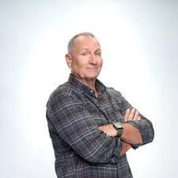
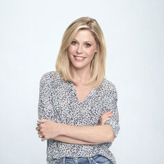

Edward Leonard O'Neill
Edward Leonard O'Neill (born April 12, 1946) is an American actor and
comedian. His roles include Al Bundy on the Fox Network sitcom Married... with Children, for which he
was nominated for two Golden Globes, and Jay Pritchett on the award-winning ABC sitcom Modern Family, a
role for which he has been nominated for three Primetime Emmy Awards and won four Screen Actors Guild
Awards, all for being part of a best Ensemble in a Comedy Series. He has also appeared in the Wayne's
World film series, Little Giants, Prefontaine,The Bone Collector and Sun Dogs, and has done voice-work
for the Wreck It Ralph franchise and Finding Dory.

Julie Bowen
Julie Bowen Luetkemeyer (born March 3, 1970) is an American actress and
model. She is best known for playing Aunt Gwen on Dawson's Creek (2000), Carol Vessey on Ed, Denise
Bauer Legal, Sarah Shephard on Lost, and Claire Dunphy on the comedy Modern Family (since 2009). The
last earned her six nominations for the Primetime Emmy Award for Outstanding Supporting Actress in a
Comedy Series , winning in 2011 and 2012. Bowen has also appeared in films such as Happy Gilmore (1996),
Multiplicity (1996), Venus and Mars (2001), Joe Somebody (2001), Kids in America (2005), Sex and Death
101 (2007), Crazy on the Outside (2010), Jumping the Broom (2011), and Horrible Bosses (2011).

Tyler Gerald Burrell
Tyler Gerald Burrell (born August 22, 1967) is an American actor and
comedian. He originally rose to prominence in several roles on Broadway including Macbeth, and the
off-Broadway plays Corners, The Blue Demon, Burn This, and Show People.
Burrell is best known for his role as Phil Dunphy in the ABC sitcom Modern Family, for which he has
won the Primetime Emmy Award for Outstanding Supporting Actor in a Comedy Series in 2011 and 2014
and five Screen Actors Guild Awards: one for Outstanding Performance by a Male Actor in a Comedy
Series in 2013 and four consecutive awards for Outstanding Performance by an Ensemble in a Comedy
Series shared with the cast from 2011 to 2014.

Sofía Vergara
Sofía Vergara (born July 10, 1972) is a Colombian-American actress. One of
the best-paid actresses in the world, she is the top-earning actress in American television, as of 2019.
Vergara rose to prominence while co-hosting two television shows for Spanish-language television
network Univisión in the late 1990s. Her first notable acting job in English was in the film Chasing
Papi (2003). She subsequently appeared in the comedies Four Brothers (2005), and Tyler Perry's Meet
the Browns (2008) and Madea Goes to Jail (2009), receiving an ALMA Award nomination for the latter.
Since 2009, she began playing Gloria Delgado-Pritchett in the ABC comedy series Modern Family, for
which she has been nominated for four Golden Globe Awards, four Primetime Emmy Awards, and seven
Screen Actors Guild Awards.